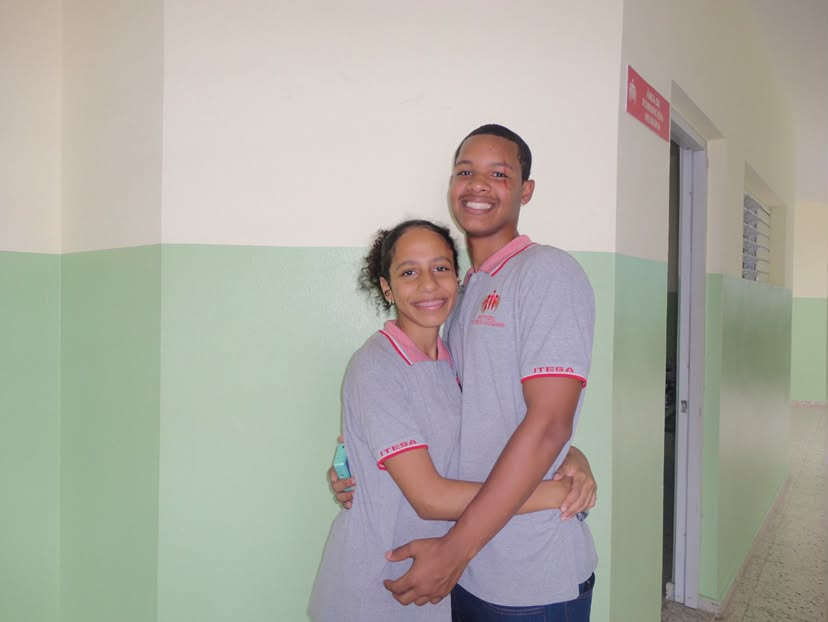
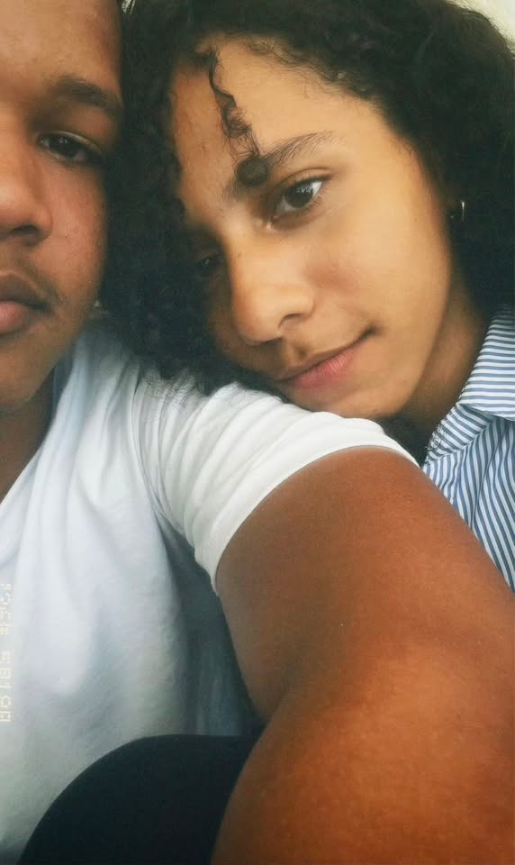
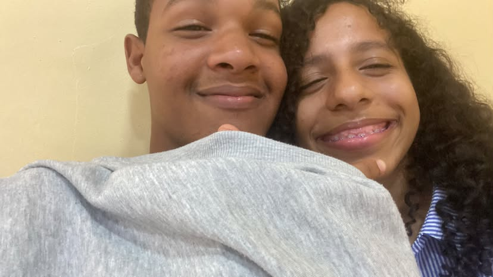
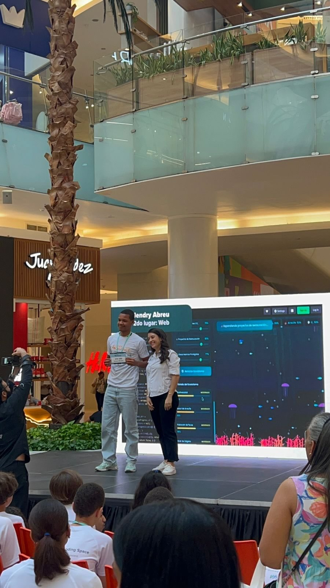
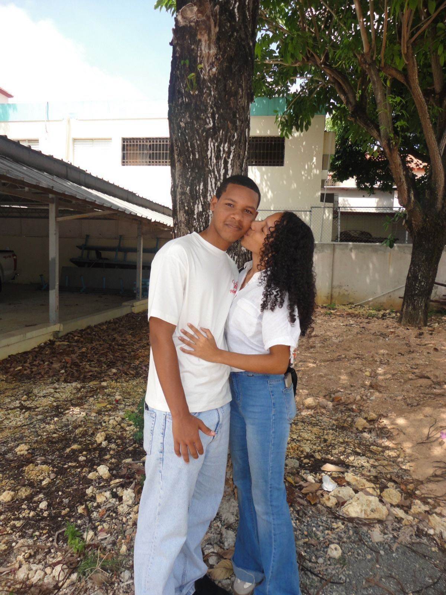

En ese momento no tenía idea de todo lo que iba a pasar después.
Pero ahora la veo y pienso:
aquí empezó todo. 💙
```
El día en que una salida por helado terminó convirtiéndose en uno de mis recuerdos favoritos.
📸 Nosotros
Algunos de mis recuerdos favoritos tienen algo en común:
tú. 💙



🏅 Mi programador favorito

Hay muchas cosas que admiro de ti,
pero verte cumplir metas tiene un lugar especial en mi corazón.
Cada logro tuyo me hace sentir orgullosa,
porque sé cuánto te esfuerzas incluso cuando nadie está mirando.
💙 El efecto que tienes en mí

Hay personas que te hacen sentir emoción.
Tú me haces sentir paz.
Porque contigo no siento que tenga que correr,
demostrar o esconder nada.
Simplemente puedo ser yo.
Eres mi lugar seguro.
Mi calma.
Mi persona favorita.
✨ Las cosas que sueño cuando pienso en nosotros
✈️ Viajar contigo sin importar el destino
🌙 Perder mis miedos contigo
🏆 Celebrar cada uno de tus logros
💻 Acompañarte en cada proyecto
❤️ Ser tu novia
🌱 Crecer juntos
👨👩👧👦 Construir una familia
Mi gordito bello,
Si alguien me hubiera dicho hace unos meses que una persona iba a convertirse tan rápido en mi lugar favorito, probablemente no lo habría creído.
Pero llegaste tú.
Y poco a poco te volviste parte de mis días, de mis pensamientos y de mis planes.
Me encanta verte cumplir metas.
Me encanta escucharte hablar de lo que te apasiona.
Me encanta sentir que contigo puedo ser completamente yo.
Gracias por hacerme sentir tranquila.
Gracias por hacerme sentir segura.
Gracias por llegar a mi vida.